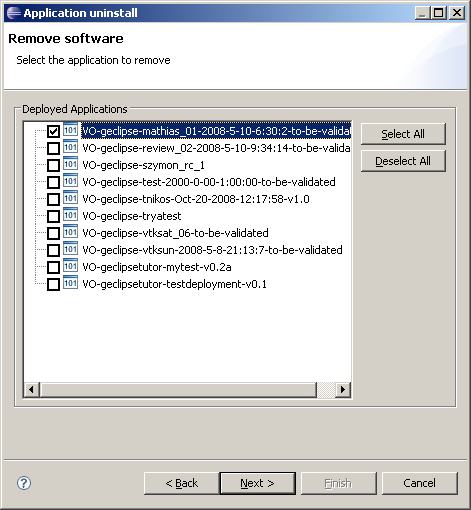

A deployed application can be removed from the Grid site. This includes the deletion of the software on the computing elements and the removal of the application tag from the information system. Hence, the tag will not appear anymore in the g-Eclipse folders.
Like with deployment/install, only users who have got a role of deployer in his VO can deploy applications. To get this role, please contact your VO manager. For using the deployment functionality, this role must be specified during the creation of an authentication token.
The uninstall wizard can be started from the New Operator's Job wizard, the same as install. Currently the uninstall wizard has only one page to let the user to choose the applications to remove.
It is possible to have middleware specific pages. Detailed information can be found in the corresponding part of the middleware category. Like install, an operator's job is created for uninstall and this job can be run via the context menu.